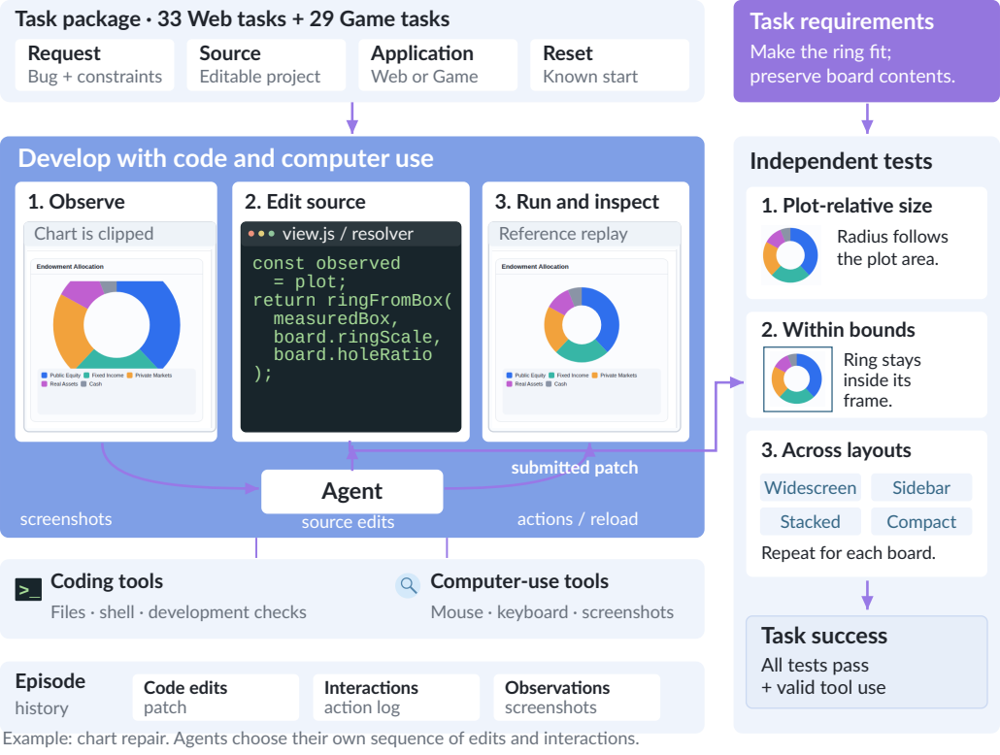

CUA-SWE: When Computer-Use Agents Meet Visual Software Engineering
Carnegie Mellon University · University of Southern California · University of Wisconsin–Madison · Arizona State University · AWS Agentic AI · *Equal contribution
CUA-SWE provides a benchmark and environment where coding agents need to repair the software by using it and visually inspecting it. Each of the 105 tasks gives the agent an editable project and the running application; deterministic, task-specific tests then judge the repaired software on a clean copy of the project. Across Web, Game, DevOps and Mobile, adding computer use to coding raises task success for all eight API models in the paired comparison.
- 105 repair tasks
- 4 domains: Web 36 · Game 29 · DevOps 20 · Mobile 20
- 11 models and agent systems
- 2 conditions: Code-only, Hybrid
- 3 versions validate every test: buggy, incomplete, reference
Web Allocation Ring Studio
 Bug
BugRing chart overflows its card in the Stacked layout
 Repaired
RepairedRing fits every layout profile
Game Vector Relay
 Bug
BugReturn fractured, relay stays armed, score 0
 Repaired
RepairedCircuit complete, +500
DevOps Counter Order Console
 Bug
BugRolling restart rendered as a 12,516 req/s spike
 Repaired
RepairedFalse spike removed, real burst retained
Mobile Mural Desk
 Bug
BugArtwork projected onto the wall plan the wrong way
 Repaired
RepairedArtwork aligned to the wall plan
Results
Task success (%) on one selected attempt per task, model and condition. Code-only uses the coding interface: read and edit source, run commands. Hybrid adds computer use: screenshots of the running application and mouse and keyboard actions. Both conditions share the same tasks, budgets and hidden tests, so the gap isolates what visual feedback and interaction contribute.
lighter bar: Code-only solid bar: Hybrid (computer use + coding) +pp gain from computer use Hue identifies the model: GPT · Claude · Grok · agent systems
Panel a reproduces Figure 3a of the paper: matched tasks within each model and domain, four domains weighted equally; Opus 5 is omitted because its Mobile evaluation is deferred. Panel c uses each model's complete scored Hybrid cohort (Figure 1b) and agent minutes per success, which divides mean episode time by task-success probability (Figure 3b). Opus 5 and Claude Code on Mobile are deferred and have no score. Codex and Claude Code are evaluated as complete agent systems in the Hybrid condition only.
Task success rate (%) across four domains
Column maxima are in bold. Hover a cell for the number of solved tasks. Each domain retains its original scoring rules: Web success also requires the required visual evidence; DevOps and Mobile exclude infrastructure errors and count genuine agent failures. Pass@3 evaluations exist for GPT-6 Astra, GPT-5.6 Sol and Fable 5 under Hybrid; see the paper's appendix.
Examples
Recorded runs, step by step: what the agent saw, what it changed, and what the verifier decided. This one follows GPT-5.6 Sol through a Vector Relay attempt; players for Web, DevOps and Mobile follow the same layout.
Screenshots, patch and verifier result come from this attempt. In the task’s three matched trials, Code-only solved 0/3 and Hybrid solved 1/3.
Tasks
Every task starts from a verified bug in a working application and specifies the failure to fix, the behavior to implement and the existing functionality to preserve. Related variants share application code and test different interactions or configurations.
Web 36 tasks · 20 applications
Interface geometry, selection and application contracts in Fabric.js (9 tasks), MapLibre (7), React Spectrum, Saleor, JupyterLab, Quill, Tiptap, Handsontable, ECharts, Recharts and business workflows such as account recovery, tax rounding and warehouse cutoffs.
Make the account recovery page display the channel selected by the live identity risk policy for the account being viewed, including ACC-731, while preserving the recovery decision trace.
Game 29 tasks · 12 games
Temporal behavior, physics and state transitions in Captain Callisto (7), Boxel Rebound (5), Flappy Bird (4), 2048, Hextris, Minesweeper, Vector Relay, Astray, Core Ball, Letter Arc, Maze Signal and Phase Relay. Tests set initial states, apply inputs and restart with fixed seeds.
The deterministic Level 3 benchmark build contains a gameplay regression. Play the pulse lane and compare the start, release, and restart of several short jetpack bursts.
DevOps 20 tasks · 10 contracts
Operational observations tied to configuration and data-processing semantics: rate before aggregation, alert inhibition, log severity normalization, pending-alert identity, SLO rollups, StatsD gauge modes, tail sampling, trace clock skew and trace context across awaits, on Prometheus, Alertmanager, Jaeger and OpenTelemetry code.
After the collector rollout, failed operations are missing from the log workbench’s severe view while a routine event appears as an error. Investigate the live records and receiver fleet, then repair severity classification.
Mobile 20 tasks · 12 families
Visually specified relationships and editing behavior in mobile-web applications run in Chromium at 400×800: nine Gantt variants plus Mural Desk, Foldnote, Pass wallet, Lamp courier, Northline, Tideglass, Marble Post, Lantern, Campus Pocket and inspection and plate-integration workflows.
Foldnote is a mobile web packaging-proof review mockup. Review markers no longer stay correctly placed and oriented when switching between Flat sheet and Individual panel.
Browse all 105 tasks with their original instructions, budgets and tests
Analysis
Computer use improves task success on every model

Computer use improves domain-averaged task success for all eight API models in the paired comparison. On matched tasks GPT-6 Astra improves from 11.3% to 59.3%, a gain of 48.1 percentage points, and every other model gains between 13.3 and 35.3 points.
The gains span different repair requirements. On DevOps, the nine API models average 50.0% with Hybrid and 0.6% with code alone: the operational contracts are only visible by driving the running consoles. On Mobile, GPT-5.6 Sol improves from 0.0% to 45.0% and GPT-6 from 0.0% to 55.0%. On Game, where timing and physics must be observed over time, the union of successful Hybrid repairs covers 58.6% of tasks.
The same panel also shows the limits: Sonnet 5 and GPT-5.6 Luna solve a few Web tasks only with code, and most Game tasks remain unsolved under both conditions.
How agents turn runtime observations into correct changes
Four selected GPT-6 Astra attempts, one per domain, as reviewed in the paper. Each card shows what the agent observed, the consequential source change, and the evaluator's verdict. Click a card to enlarge.


Where repairs still fail


Evaluation

Task check
Does the requested behavior work? Tests drive the rebuilt application through interaction sequences and assert on the rendered interface and runtime state, under several service responses, layouts, seeds or inputs.
Regression check
Does designated existing behavior still work? The same tests cover the functionality the task says must be preserved, so a fix that breaks normal play, editing or navigation fails.
Permitted-change check
Did the patch stay inside the allowed scope? Edits outside the files the task permits fail regardless of test results.
A submission counts as a repair only when all three checks pass on a fresh copy of the project; the agent never sees the tests, and the evaluator can inspect state the agent cannot, such as game-board contents. Every test is validated against three versions before release: the buggy baseline and a plausible but incomplete repair must fail, and the reference repair must pass. In the support-scheduling task, for example, an incomplete repair displayed the first appointment correctly but reused that value for the second; the tests reject it. Reported success additionally requires following each condition's tool-use rules, checked by a trajectory audit.

Citation
CUA-SWE: When Computer-Use Agents Meet Visual Software Engineering. arXiv:2609.32600, 2026. Abstract ↗ · PDF ↗ · Code and task bundles ↗ · Recorded trajectories ↗
@misc{wang2026cuaswe,
title = {CUA-SWE: When Computer-Use Agents Meet Visual Software Engineering},
author = {Wang, Prince Zizhuang and Liang, Chenhao and Xu, Zelong and Yuan, Aojie and Zhou, Xiaolin and Zhang, Haiyue and Zhao, Yue and Hu, Xiyang and Jiang, Shuli},
year = {2026},
eprint = {2609.32600},
archivePrefix = {arXiv},
url = {https://arxiv.org/abs/2609.32600}
}